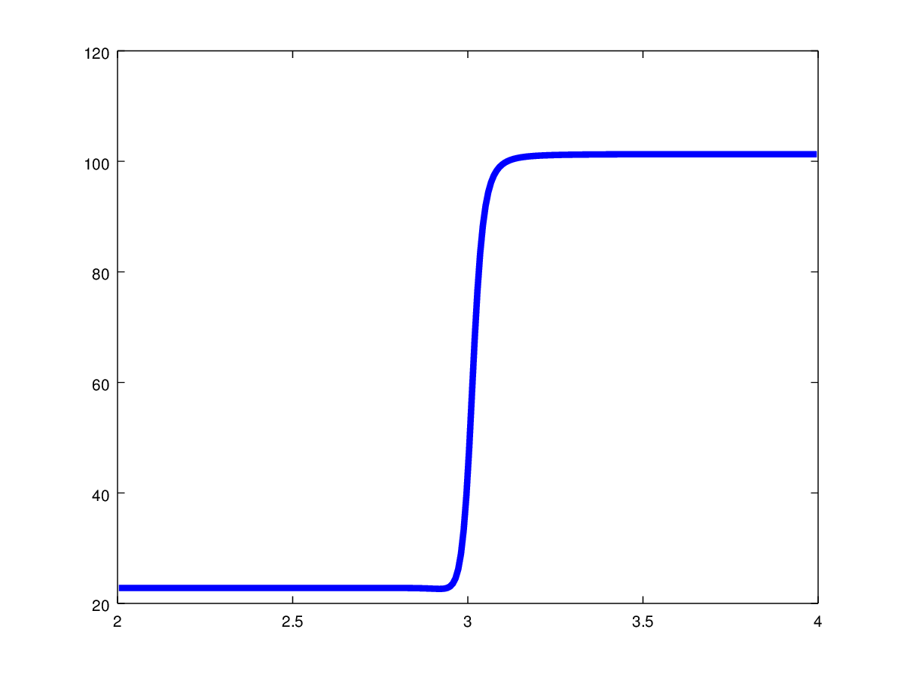

PeleC manages boundary conditions in a form consistent with many AMReX codes. Ghost cell data are updated over an AMR level during a FillPatch operation and fluxes are then computed over the entire box without specifically recognizing boundary cells. A generic boundary filler function fills standard boundary condition types that do not require user input, including:
Interior - Copy-in-intersect in index space (same as periodic boundary conditions). Periodic boundaries are set in the PeleC inputs file
Symmetry - All conserved quantities and the tangential momentum component are reflected from interior cells without
sign change (REFLECT_EVEN) while the normal component is reflected with a sign change (REFLECT_ODD)
NoSlipWall - REFLECT_EVEN is applied to all conserved quantities except for both tangential and normal momentum components which are updated
using REFLECT_ODD
SlipWall - SlipWall is identical to Symmetry
FOExtrap - First-order extrapolation: the value in the ghost-cells are a copy of the last interior cell.
More complex boundary conditions require user input that is prescribed explicitly. Boundaries identified as UserBC or Hard in the inputs will be tagged as EXT_DIR in pc_hypfill. Users will then fill the boundary values, by calling the helper function, bcnormal. The bcnormal function fills an exterior (ghost) cell based on the value of the outermost interior cell. Its arguments include a problem-specific data structure, the location, direction, and orientation of the boundary being filled, and potentially fluctuating turbulent velocities from the TurbInflow utility in PelePhysics. This gives the user flexibility to specify a variety of boundary conditions, including faces that contain both walls and inflow regions. Note that the external state s_ext is prepopulated with the same values as are used for the NoSlipWall condition, so the default if the bcnormal function does nothing is to specify a NoSlipWall.
Note
To ensure conservation, when Godunov schemes are used the order of accuracy is reduced at boundaries specified using bcnormal; PLM is used and the predictor step is omitted when computing fluxes through these boundaries. This does not affect any other boundary types or simulations using MOL.
Special care should be taken when prescribing subsonic Inflow or an Outflow boundary conditions. It might be tempting to directly impose target values in the boundary filler function (for Inflow), or to perform a simple extrapolation (for Outflow). However, this approach would fail to correctly respect the flow of information along solution characteristics - the system would be ill-posed and would lead to unphysical behavior. In particular, at a subsonic inflow boundary, at a subsonic inlet there is one outgoing characteristic, so one flow variable must be specified using information from inside the domain. Similarly, there is one incoming characteristic at outflow boundaries. The NSCBC method, described below, is the preferred method to account for this, but has not been ported to the all C++ version of PeleC. In the meantime, the recommended strategy for subsonic inflow and outflow boundaries for confined geometries such as nozzles and combustors is as follows:
Subsonic Inflows: Specify the desired temperature, velocity, and composition (if relevant) in the ghost cells. Take the pressure from the domain interior. Based on these values, compute the density, internal energy, and total energy for the ghost cells.
A detailed analysis comparing various boundary condition strategies and demonstrating their implementation is available for the Converging Nozzle Case case.
By default, the boundaries specified as NoSlipWall and SlipWall are adiabatic. For isothermal wall boundaries, energy fluxes through the isothermal wall are computed separately, rather than being based on values populated in the ghost cells. To activate computation of isothermal wallfluxes, use the input file option pelec.do_isothermal_walls=1 and then specify the desired wall temperatures using, for example, pelec.domlo_wall_temp=-1-1300.0 and pelec.domhi_isothermal_temp=-1-1400.0, which would leave the x and y boundaries as adiabatic, make the lower z boundary isothermal at 300 K, and make the upper z boundary isothermal at 400 K. Any boundary with a negative (or zero) value for the specified temperature is treated as adiabatic; boundaries that are not NoSlipWall, SlipWall, UserBC, or Hard must always have a negative value specified.
This following is currently deprecated as the GS-NSCBC boundary condition has not been ported from Fortran to C++.
A well-known approach to the subsonic problem is the Navier-Stokes Characteristic Boundary Conditions
(NSCBC) strategy, and is described in the paper Poinsot and Lele (1992) JCP. In the method, the hyperbolic structure is
decomposed to identify incoming and outgoing waves, given a statement of the “external” state outside the domain, and
then to construct a model that gives “desired” behavior at the interface. One issue with direct application of
the NSCBC treatment in PeleC is that it is formulated to impose boundary fluxes directly. In PeleC however, the
Godunov approach that is implemented makes use of boundary data specified via grow cell values, and reconstructs fluxes at faces when required. Thus, the NSCBC strategy has been reformulated to provide the grow cell data required in PeleC. The strategy,
the Ghost-Cells Navier-Stokes Boundary Conditions (GC-NSCBC) method, is described in Motheau et al. (2017) AIAA Journal.
For the characteristics-based boundary condition implementation, the solution is rewritten in terms of one-dimensional hyperbolic wave propagation. The waves leaving the domain are computed numerically, while the waves entering into the domain are provided by a model that is based on a “target state”. With the help of numerical relaxation parameters, the contribution of entering waves can be controlled to afford some freedom at the boundary to “push” toward a target state while also allowing acoustic waves to leave the domain. The approach allows some control to minimize the effects of reflected waves, which would otherwise result from the “hard” imposition of the external conditions. Description of the relevant theory is beyond the scope of this documentation (see the paper Motheau et al. (2017) AIAA Journal, which also contains examples demonstrating why imposing directly target values in ghost-cells
does not work as expected, and why the NSCBC theory helps to get a more “desirable” solution).
In order to understand the impact of the GC-NSCBC treatment, we give an example that imposes “hard” values in the ghost-cells to represent external conditions, and uses first-order extrapolation at the outflow boundary.
A precomputed 1D flame profile is interpolated onto a uniform PeleC grid. Because the solution has to adapt to the new grid and to the PeleC numerical discretization, it creates an unphysical acoustic bump that moves through the domain as an acoustic disturbance. With “hard” boundary conditions, this disturbance is reflected from the outflow boundary back into the domain, and interacts with the flame upstream. A steady solution to this system would require the propagation of this wave back and forth until numerical diffusion eventually reduces its magnitude below some threshold. With the GC-NSCBC boundary treatment, the acoustic wave simply leaves the computational domain. Often times, the latter is the desired behavior of the code.

No GC-NSCBC treatment, hard values set at the left boundary for the inflow, and first order extrapolation in the right boundary to mimic an outflow. The unphysical reflections of the acoustic wave at boundary can be clearly seen.
With the GC-NSCBC, the spurious acoustic wave simply leaves the domain with no unphysical reflection.
In PeleC, the subroutine bcnormal is used to provide the target state for the GC-NSCBC treatment as well as the numerical parameters used by the GC-NSCBC method to efficiently “damp” the reflected waves. Note the signature and the content of the bcnormal routine:
subroutine bcnormal(x,u_int,u_ext,dir,sgn,time,bc_type,bc_params,bc_target)
...
integer, optional, intent(out) :: bc_type
double precision, optional, intent(out) :: bc_params(6)
double precision, optional, intent(out) :: bc_target(5)
...
double precision :: relax_U, relax_V, relax_W, relax_T, beta, sigma_out
integer :: flag_nscbc, which_bc_type
flag_nscbc = 0
! When optional arguments are present, GC-NSCBC is activated
! Generic values are auto-filled for numerical parameters,
! but should be set by the user for each BC
! Note that in the impose_NSCBC_xD.f90 routine, not all parameters are used in same time
if (present(bc_type).and.present(bc_params).and.present(bc_target)) then
flag_nscbc = 1
relax_U = 0.5d0 ! For inflow only, relax parameter for x_velocity
relax_V = 0.5d0 ! For inflow only, relax parameter for y_velocity
relax_W = 0.5d0 ! For inflow only, relax parameter for z_velocity
relax_T = -0.2d0 ! For inflow only, relax parameter for temperature
beta = 1.0d0 ! Control the contribution of transverse terms, here they will be discarded
sigma_out = -0.6d0 ! For outflow only, relax parameter. A negative value means that the local Mach number will be used
which_bc_type = Interior ! This is to ensure that nothing will be done if the user don't set anything
endif
When bc_type, bc_params and bc_target parameters are present, the routine is likely being called from impose_NSCBC_(dir)d.F90. In this case the flag flag_nscbc is activated to fill optional arrays with the requisite data. Note however that the FillPatch operation called in the AMReX framework also calls pc_hypfill, which then also calls bcnormal. In this case, the GC-NSCBC parameters are not directly relevant. In order to make bc_normal sufficiently generic for both purposes, only the target state is returned to pc_hypfill and the parameters associated to the GC-NSCBC method are ignored. By default, the GC-NSCBC method is activated for all subsonic flow boundaries. It can be turned off by setting the flags nscbc_adv and nscbc_diff to zero. In that case, the ghost-cells will be filled directly with the target state (although, as mentioned, this will likely lead to undesired behavior in the solution!).
The use of bc_type, bc_params and bc_target will be described in detail in other sections of this documentation, but let us focus here on the parameter, bc_type. The bc_type (an integer) is a coded form of the physical boundary condition that we want to impose, and this is done point-wise. This means that along a face of the domain, different physical boundary conditions
can be combined. For example, one may wish to impose an inflow in the middle of a wall in order to represent a localized inlet jet or an open boundary. Four physical boundary conditions are implemented in the GC-NSCBC framework: Inflow, Outflow, SlipWall, NoSlipWall.
Inflow and Outflow conditions rely on different models for the waves entering into the domain, and are computed in the routine compute_waves in impose_NSCBC_(dir)d.F90.
For example in 2D, Inflow requires models for three incoming waves. Thus, three relaxation parameters are needed: relax_U, relax_V and relax_T. Also, three state target
values are needed: TARGET_VX, TARGET_VY and TARGET_TEMPERATURE. For an Outflow, only one wave is leaving the domain, so only TARGET_PRESSURE is needed, and
the relaxation parameter is controlled with sigma_out. Note that transverse terms can be included in the computation of the waves, and the amount of contribution is controlled
by the parameter beta, with values between 0 (full contribution) and 1 (no contribution). A negative input value of beta indicates that beta will be adjusted dynamically with the Mach number of the local flow (see Motheau et al. (2017) AIAA Journal and other references therein for details).
The impose_NSCBC_(dir)d.F90 routine is organized as follows:
First, data in ghost-cells along the direction at corners are treated. This is because we have to use a one-sided derivative to compute transverse terms at corners.
For each cell, we compute derivatives in the normal and tangential directions of the face.
We call bcnormal to get: the physical boundary (bc_type), the target state values (bc_target), and the associated numerical parameters (bc_params).
Then we compute the NSCBC waves.
The last step is GC-NSCBC procedure to recompute the values in ghost-cells according to the characteristic waves that have been computed in the previous step.
This procedure is done for each face of the domain.
Below is an example to achieve an inflow/outflow along the x-axis of a channel, periodic in y. Note how the bc_params and bc_target arrays are constructed at the end of the routine.
subroutine bcnormal(x,u_int,u_ext,dir,sgn,time,bc_type,bc_params,bc_target)
use probdata_module
use eos_type_module
use eos_module
use meth_params_module, only : URHO, UMX, UMY, UMZ, UTEMP, UEDEN, UEINT, UFS
use network, only: nspecies, naux, molec_wt
use prob_params_module, only : Interior, Inflow, Outflow, SlipWall, NoSlipWall, &
problo, probhi
use bl_constants_module, only: M_PI
implicit none
double precision :: x(3), time
double precision :: u_int(*),u_ext(*)
integer :: dir,sgn
integer, optional, intent(out) :: bc_type
double precision, optional, intent(out) :: bc_params(6)
double precision, optional, intent(out) :: bc_target(5)
type (eos_t) :: eos_state
double precision :: u(3)
double precision :: y
double precision :: relax_U, relax_V, relax_W, relax_T, beta, sigma_out
integer :: flag_nscbc, which_bc_type
flag_nscbc = 0
! When optional arguments are present, GC-NSCBC is activated
! Generic values are auto-filled for numerical parameters,
! but should be set by the user for each BC
! Note that in the impose_NSCBC_xD.f90 routine, not all parameters are used in same time
if (present(bc_type).and.present(bc_params).and.present(bc_target)) then
flag_nscbc = 1
relax_U = 0.5d0 ! For inflow only, relax parameter for x_velocity
relax_V = 0.5d0 ! For inflow only, relax parameter for y_velocity
relax_W = 0.5d0 ! For inflow only, relax parameter for z_velocity
relax_T = 0.2d0 ! For inflow only, relax parameter for temperature
beta = 0.2d0 ! Control the contribution of transverse terms
sigma_out = 0.25d0 ! For outflow only, relax parameter
which_bc_type = Interior ! This is to ensure that nothing will be done if the user don't set anything
endif
call build(eos_state)
! at low X
if (dir == 1) then
if (sgn == 1) then
relax_U = 10.0d0
relax_V = 2.0d0
relax_T = - relax_V
beta = 0.6d0
which_bc_type = Inflow
u(1) = u_ref
u(2) = 0.0d0
u(3) = 0.0d0
eos_state % massfrac(1) = 1.d0
eos_state % p = p_ref
eos_state % T = T_ref
call eos_tp(eos_state)
end if
! at hi X
if (sgn == -1) then
! Set outflow pressure
which_bc_type = Outflow
sigma_out = 0.28d0
beta = -0.60d0
u(1:3) = 0.d0
eos_state % massfrac(1) = 1.d0
eos_state % p = p_ref
eos_state % T = T_ref
call eos_tp(eos_state)
end if
end if
! at low Y
if (dir == 2) then
if (sgn == 1) then
! Do nothing, this is periodic
end if
! at hi Y
if (sgn == -1) then
! Do nothing, this is periodic
end if
end if
u_ext(UFS:UFS+nspecies-1) = eos_state % massfrac * eos_state % rho
u_ext(URHO) = eos_state % rho
u_ext(UMX) = eos_state % rho * u(1)
u_ext(UMY) = eos_state % rho * u(2)
u_ext(UMZ) = eos_state % rho * u(3)
u_ext(UTEMP) = eos_state % T
u_ext(UEINT) = eos_state % rho * eos_state % e
u_ext(UEDEN) = eos_state % rho * (eos_state % e + 0.5d0 * (u(1)**2 + u(2)**2) + u(3)**2)
! Here the optional parameters are filled by the local variables if they were present
if (flag_nscbc == 1) then
bc_type = which_bc_type
bc_params(1) = relax_T! For inflow only, relax parameter for temperature
bc_params(2) = relax_U ! For inflow only, relax parameter for x_velocity
bc_params(3) = relax_V ! For inflow only, relax parameter for y_velocity
bc_params(4) = relax_W ! For inflow only, relax parameter for z_velocity
bc_params(5) = beta ! Control the contribution of transverse terms.
bc_params(6) = sigma_out ! For outflow only, relax parameter
bc_target(1) = U_ext(UMX)/U_ext(URHO) ! Target for Inflow
bc_target(2) = U_ext(UMY)/U_ext(URHO) ! Target for Inflow
bc_target(3) = U_ext(UMZ)/U_ext(URHO) ! Target for Inflow
bc_target(4) = U_ext(UTEMP) ! Target for Inflow
bc_target(5) = eos_state%p ! Target for Outflow
end if
call destroy(eos_state)
end subroutine bcnormal
The choice of the relaxation parameters in bc_params is case-dependent, unfortunately. Some trial-and-error is often required to find the best values. However, we suggest the the following based on literature and practical experience:
relax_U, relax_V and relax_W should have values near 0.2. Higher values will impose the velocity more “strongly”, but will likely lead to more unphysical waves reflection.
relax_T must be a negative value, typically near -0.2.
For outflow boundaries, sigma_out = 0.25 is often reported to be a good choice.
The beta must be between 0 and 1; it controls the contribution of transverse terms. The choice for this parameter is more complicated. For outflows, it should be close to the Mach number. For some cases, a spatially averaged Mach number will provide good results, while for other cases, the point-wise local Mach number is better. beta will be set to the local Mach number if it is set to a negative value in the inputs. For inflows, it has been found that a value of 0.5 provides good results, but it may lead to instabilities, and for some case turning off the transverse terms (beta=1) will be better.